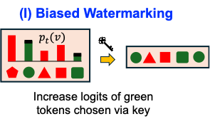
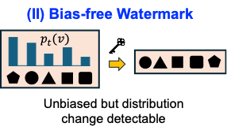
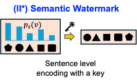
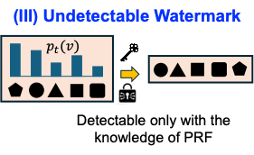
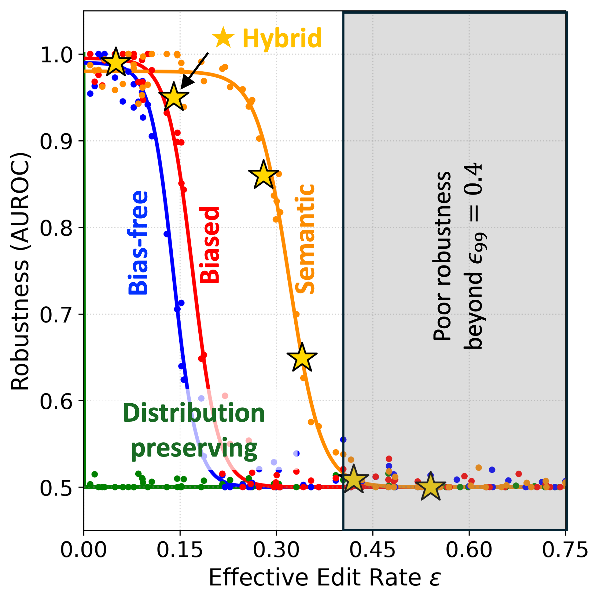

Stealth
The surface text should look ordinary to a keyless observer; the signal is meant to stay hidden unless the verifier has the key.
ICML 2026
LLM watermarks face a Catch-22: signals that survive editing tend to become easier for keyless observers to detect, while signals that remain stealthy are often easier to erase.


Watermarking tradeoff
The verifier should still recover it after edits, while a keyless observer should not be able to see the shift.
The surface text should look ordinary to a keyless observer; the signal is meant to stay hidden unless the verifier has the key.

After edits, the verifier should still recover enough of the watermark to identify the generated text as watermarked.
Making the signal stronger improves robustness, but it often increases detectability; making it stealthier can make it easier to erase.

I. Biased watermarking
Raises the probability of keyed token sets, producing strong verifier evidence and higher keyless visibility.

II. Bias-free token watermarking
Preserves token marginals more carefully. Robustness depends on token alignment surviving edits.

II*. Semantic watermarking
Uses sentence or semantic features, so paraphrases hurt less than exact token substitutions.

IV. Others
These methods are evaluated in the same pipeline, but they do not correspond to one of the four schematic panels above.
High signal, high visibility
A strong sampling bias accumulates evidence quickly, but the same probability shift gives a keyless observer more statistical drift to exploit.
Strong evidence is useful for verification, but it also moves the text farther from the unwatermarked distribution.
Inference-time watermarks verify AI-generated text by embedding statistical evidence into the sampling process. The same evidence creates tension between two goals: the verifier wants the signal to survive paraphrasing and other edits, while an outsider should not be able to detect that the text is watermarked.
Our framework compares heterogeneous watermark families through a shared quantity: a usable KL information budget. Distribution-preserving schemes keep keyless statistical drift at zero but are brittle under edits. Probability-modifying token- and sentence-level schemes accumulate more evidence, but that evidence also increases detectability.
A token-level watermark can be explained as a subtle statistical preference. At each generation step, the vocabulary is split into context-dependent green and red tokens. The generator softly nudges probability mass toward green tokens without forcing low-quality words.
Detection recomputes the same green/red split and asks whether the final text contains an unusually high green-token count. Editing and paraphrasing reduce that evidence, which is why the selector must account for the expected edit channel before choosing a watermark family.
Detector view
The keyed verifier sees a statistically surprising surplus of green tokens, while a keyless outsider may also see distributional drift if the watermark modifies probabilities too aggressively.
Mathematical build-up
Start with the ordinary sampler and the watermarked sampler over the generated sequence.
At one step, the watermark contributes the KL gap between the two next-token distributions.
Because generation is token-by-token, these small information contributions add across the sequence.
Keyless detectability is then bounded by the accumulated information.
Plugging in the per-family one-step terms gives the qualitative frontier.
Interpretation. A single small nudge may be invisible, but the summed KL budget \(D_{\mathrm{seq}}\) grows with length, and the total-variation bound translates that budget into possible keyless detectability.
This intuition follows the green-token watermark explanation popularized around KGW-style LLM watermarks; see the Arize research reading summary for a reader-friendly treatment.
Detectability
The accumulated divergence between watermarked and unwatermarked text bounds what keyless tests can distinguish, while also governing verifier-side hypothesis testing power.
Robustness
For token-level schemes, usable information contracts with the edit rate. For semantic schemes, the relevant contraction depends on the induced semantic flip rate.
Selection
The best family depends on the expected editing regime, the stealth cap, and the amount of post-edit verification power required at deployment.
Mathematical build-up
Write the watermark as a small perturbation of the baseline token distribution.
Model editing as replacing an \(\varepsilon\) fraction of tokens by an edit distribution \(R\).
The edit distribution cancels in the difference, leaving a weaker watermark perturbation.
Since local KL is quadratic in the perturbation size, the retained information is squared.
Across \(T\) tokens, the post-edit token budget is therefore
Verification succeeds only while that remaining budget clears the target error threshold.
For semantic schemes, replace token survival by the semantic flip rate.
Interpretation. Edits first shrink the watermark perturbation by \(1-\varepsilon\); KL then squares that remaining perturbation, producing the \((1-\varepsilon)^2\) contraction.
Imagine an LFQA answer generated for public release. Before embedding the watermark, the system estimates how the answer will be edited downstream and routes it to the family that best matches that edit regime.
Expected route
The answer is stored or served nearly unchanged, so the selector can use a distribution-preserving watermark whose evidence depends on preserving alignment.
Selected watermark
Distribution-preserving watermark
ε ≈ 0.25, εs ≈ 0.06
ε ≈ 0.42, εs ≈ 0.10
ε ≈ 0, εs ≈ 0
This is the low-edit corner of the diagram: distribution preservation gives the strongest stealth signal when the downstream channel is expected to leave the text nearly intact.
Experiments on Llama-2-7B and Mistral-7B evaluate clean detection and post-edit robustness under moderate Dipper rewriting and stronger summarization-style paraphrasing. The results support the theoretical prediction that watermark evidence weakens as edits remove or flip the signal.
Across evaluated regimes, the hybrid method tracks the strongest available family more closely than any fixed family while preserving a lower-detectability operating point than aggressively biased token-level methods.

The code package evaluates the implemented watermark families on LFQA prompts with Llama-2-7B and Mistral-7B. A local backend is included for environment checks before full GPU reproduction.
python -m catch22.pipeline \
--config configs/llama2_lfqa.yaml \
--reproduction-suite \
--num-samples 2 \
--local-backend \
--resume@inproceedings{catch22watermarking2026,
title = {Catch-22: On the Fundamental Tradeoff Between Detectability and Robustness in LLM Watermarking},
author = {Pratihar, Kuheli and Mukhopadhyay, Debdeep},
booktitle = {Proceedings of the 43rd International Conference on Machine Learning},
year = {2026},
url = {https://icml.cc/virtual/2026/poster/66807}
}